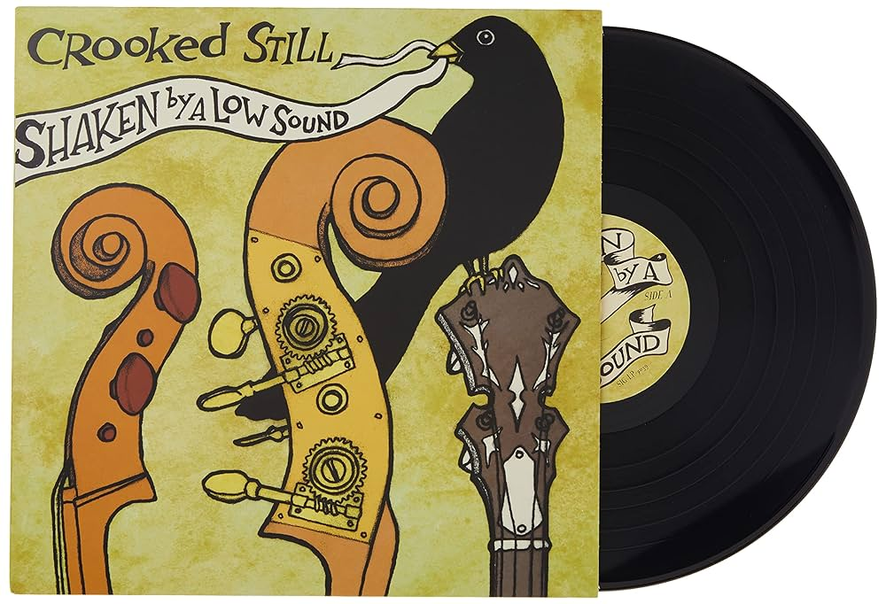
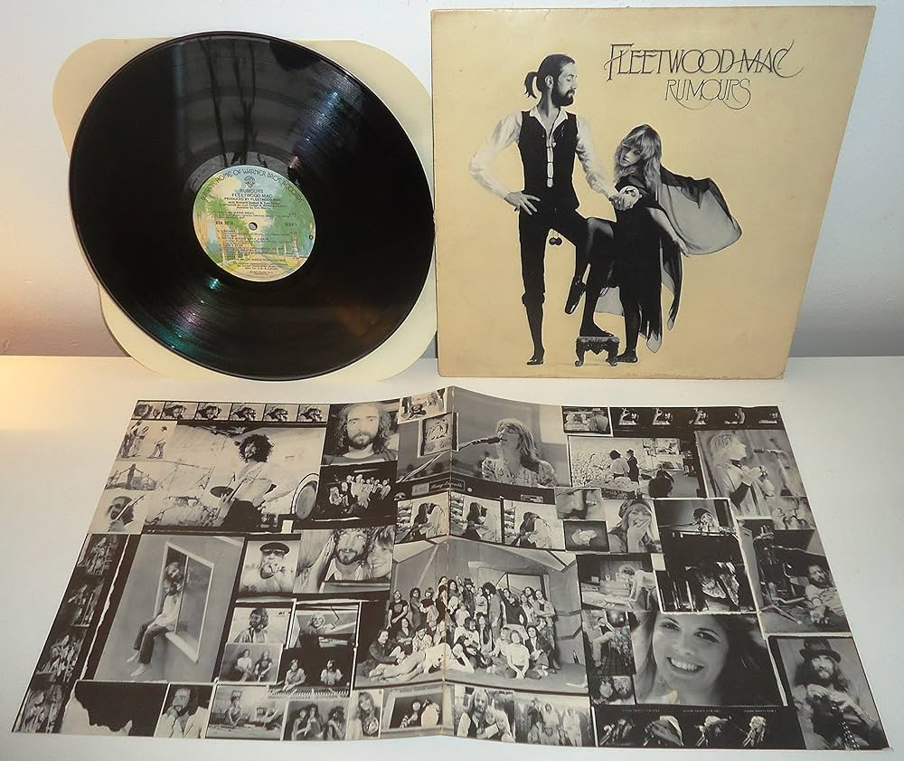

O Dia do Disco
O Dia do Disco, também conhecido como Dia do Disco de Vinil, é comemorado anualmente em 20 de abril.

O disco de vinil é considerado um marco na história do entretenimento musical, ajudando a criar novos hábitos, seja entre os ouvintes ou entre os produtores musicais. O vinil foi desenvolvido em meados da década de 1940, permanecendo popular em todo o mundo até o surgimento do CD e de outras mídias mais avançadas.
Comemoração
A comemoração do Dia do Disco de Vinil surgiu em homenagem ao músico Ataulfo Alves, que morreu em 20 de abril de 1968.

Dez anos depois, em 1978, no Rio de Janeiro, os saudosistas e colecionadores de discos decidiram dedicar esta data para celebrar a sua paixão pelo vinil.
Disco de vinil
Atualmente, o disco de vinil voltou a se tornar popular, não pela sua praticidade (visto que os CD’s apresentam superior qualidade sonora, por exemplo), mas pela peculiaridade que o caracteriza.

Os vinis ressurgiram não com a mesma força comercial de outrora, mas como um objeto retrô, destinado principalmente para os verdadeiros amantes da música e desta clássica mídia.
Origem do Dia do Disco
A comemoração do Dia do Disco de Vinil surgiu em homenagem ao músico Ataulfo Alves, que morreu em 20 de abril de 1968.

Dez anos depois, em 1978, no Rio de Janeiro, os saudosistas e colecionadores de discos decidiram dedicar esta data para celebrar a sua paixão pelo vinil.
Bolachões
Um gosto peculiar pelos também conhecidos bolachões, a cultura do vinil cresce e ganha novos adeptos a cada dia.
para os colecionadores, cada disco tem uma história, como esse, por exemplo, da Pitty que tem todo um significado para mim e só quem coleciona pode entender… Ou até mesmo esse outro, original e raro da grande rainha do rock Rita Lee.